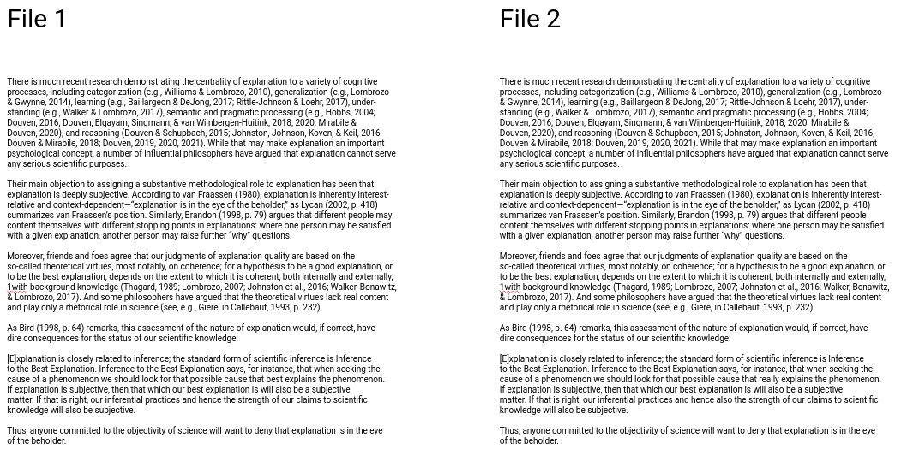
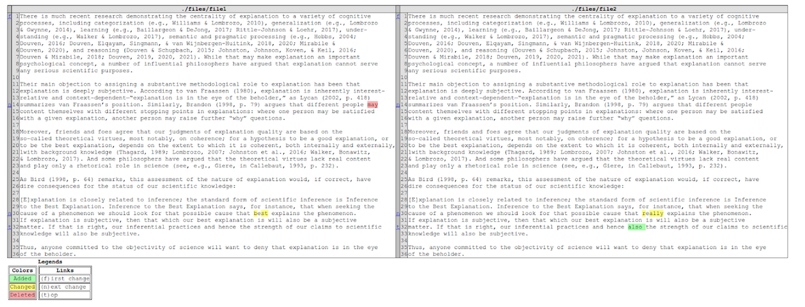

Automate the Boring Stuff¶
In this workshop, I’ll introduce you a few useful scripts motivated by the following book.
Why Would you Want to Automate?¶
Many aspects of working with data, files etc. in involve the repetition of tasks and time consuming processes. Not only do many laborious tasks take time - but they can often be quite boring and hence prone to human error. Many common tasks can be automated via scripting in Python (and other languages) - that way, they can be repeated (so are reproducible) and unlikely to lead to the same errors that people can make (unless there’s a problem in the script!)
This workshop contains examples of:
Comparing two text files to see how they are different.
Using regular expressions (regex) to extract email addresses for schools in two regions of London from a spreadsheet.
Printing out the structure and contents of a directory.
Problem 1¶
Imagine you and a colleague are writing a document collaboratively. You’ve both taken an almost-final version of the document, and then each of you has made your own edits. You now have two versions of the ‘final’ document - with only very minor changes between them. How do you compare the two versions to figure out what differences there are between them?
You could do this manually. But how quick and accurate would you be?
Can you spot the changes between the two almost identical text files below? There are three differences between the files - one addition, one deletion, and one change. Can you spot them?

It’s tricky to do this manually, so let’s look at a short Python script to automate this. The script is based on the view.py script from here.
It compares two files - file1 and file2. The files need to be text files (so you may need to re-save the files as .txt files if you’re running this on your own documents), and as it’s written they need to be in a folder called data within the folder where the Python script itself sits.
The two files are compared using the Python difflib module. An HTML table is produced which highlights the differences between the two files - the path to the table is outputted by the script. We are using the os module so we can write the output using the appropriate file path.
# adapted from view.py at
# https://www.programcreek.com/python/?project_name=osssanitizer%2Fosspolice
import os
import difflib
file1 = "data/file1"
file2 = "data/file2"
fromlines = open(file1, "r").readlines()
tolines = open(file2, "r").readlines()
diff = difflib.HtmlDiff().make_file(fromlines,tolines,file1,file2)
path = "data/" + os.path.basename(file1) + "_" + os.path.basename(file2) + "_diff.html"
f = open(path,"w")
f.write(diff)
f.close()
print("The table of differences can be found here:", path)
The table of differences can be found here: data/file1_file2_diff.html

Problem 2¶
Imagine we have a very large (~7 MB) .csv file which contains a bunch of email address for all schools in the UK. We want to extract all the email address for schools in Hackney and Camden. They follow the format:
name@schoolname.hackney.sch.uk
We could manually search through the spreadsheet using CTRL-F or suchlike to find these - or we could automate the task…
A Quick Tour of Regular Expressions (regex)¶
Regular expressions allow us to search for a pattern of text. Common patterns include email address (text with the @ symbol in the middle), web addresses that often have full stops and forward slashes, social media hashtags that begin with the # symbol etc.
If you had a list of names and you wanted to find all the michaels, Michaels, Mikes and mikes, you could use a simple regular expression inside of a search-box to locate all of them at once. You can use regular expressions to find all the files in a directory that end with jpg (or jpeg, or JPG or JPEG). You can use them to find all the street addresses (every string beginning with a number, followed by a space, followed by one or more words, followed by Street, or St, or Road or Rd, etc).
Knowing (regular expressions) can mean the difference between solving a problem in three steps and solving it in 3,000 steps. When you’re a nerd, you forget that the problems you solve with a couple keystrokes can take other people days of tedious, error-prone work to slog through.
In the US, phone numbers take the form of three digits followed by a dash, followed by three more digits followed by another dash, and then finally four digits. We can capture this pattern using the following regex:
\d\d\d-\d\d\d-\d\d\d\d
Where each \d in the regex stands for any digit character. We can combine these kind of ‘character class’ shorthand codes with literals. For example the regex andrew\d\d will match all occurrences of my name andrew which is followed by two digits (e.g., andrew23, andrew09, andrew65 will all match, but andrew3 will not).
Other common character class shorthand codes include:
\DAny character that is not a digit from 0 to 9\wAny letter, digit, or the underscore character\WAny character that is not a letter, digit, or the underscore character\sAny space, tab, or newline character
In addition to the shorthand codes, regular expressions can include operators - some common ones are:
.Matches any single character.?The preceding item is optional and will be matched, at most, once.*The preceding item will be matched zero or more times.+The preceding item will be matched one or more times.{N}The preceding item is matched exactly N times.{N,}The preceding item is matched N or more times.{N,M}The preceding item is matched at least N times, but not more than M times.-Represents the range if it’s not first or last in a list or the ending point of a range in a list.[]Lists, also called bracket expressions, are a set of one or more items.
Creating Your Own Character Class¶
Oftentimes the shorthand character classes are too broad for the kinds of matches we want. In such cases, we can create our own character class using square brackets - and can combine them with the operators on the previous slide.
For example, this regex [aeiou] will match any occurrences of a vowel in a string.
The regex [A-Za-z]+5 will match any number of characters from A-Z or a-z followed by the number 5. While the expression [A-Za-z]{4}\d will match 4 characters from A-Z or a-z followed by any digit.
You can play around with (and test) regular expressions here: https://regexr.com/
Returning to Our Problem¶
We want to extract all the email address for schools in Hackney and Camden. They follow the format:
name@schoolname.hackney.sch.uk
name@schoolname.camden.sch.uk
Both name and schoolname could contain any number of upper and lower case characters or digits but also symbols such as . or - used to separate first names from surnames (e.g., mike.dixon or mike-dixon). The same might hold for the schoolname. After name there will be an @ symbol followed by schoolname and either the string .hackney.sch.uk OR .camden.sch.uk.
So we want to create a regex that allows for these kinds of possible patterns.
Creating our regex¶
On the basis of what we’ve just discussed, the following regex should capture what we need:
[A-Za-z0-9.-]+@[A-Za-z0-9.-]+.(hackney|camden).sch.uk
This will match patterns made up of any number of upper and lower case characters, digits, and the symbols . and -, followed by the @ symbol, followed by any number of upper and lower case characters, digits, and the symbols . and -, followed by a . followed by either hackney OR camden followed by .sch.uk
The | operator can be read as boolean OR so in the above regex we match for either hackney OR camden in the email address.
Our Python Script for regex Searching¶
import csv
import re
with open('./data/school_data.csv', mode='r') as csv_file:
csv_reader = csv.reader(csv_file)
for row in csv_reader:
to_search = ','.join(row)
patterns = re.findall(r'([A-Za-z0-9.-]+@[A-Za-z0-9.-]+.(hackney|camden).sch.uk)', to_search)
for pattern in patterns:
print(pattern[0])
admin@thomascoram.camden.sch.uk
ehead@netley.camden.sch.uk
admin@argyle.camden.sch.uk
admin@beckford.camden.sch.uk
head@brecknock.camden.sch.uk
admin@brookfield.camden.sch.uk
admin@carlton.camden.sch.uk
admin@edithneville.camden.sch.uk
admin@fleet.camden.sch.uk
admin@hawley.camden.sch.uk
ehead@netley.camden.sch.uk
admin@newend.camden.sch.uk
head@primrosehill.camden.sch.uk
admin@rhylprim.camden.sch.uk
admin@rcobden.camden.sch.uk
headofschool@torriano.camden.sch.uk
admin@fitzjohns.camden.sch.uk
admin@eleanorpalmer.camden.sch.uk
admin@cchurchnw3.camden.sch.uk
admin@cchurchnw1.camden.sch.uk
admin@emmanuel.camden.sch.uk
head@hampsteadprim.camden.sch.uk
admin@holytrinitynw3.camden.sch.uk
admin@holytrinitynw1.camden.sch.uk
head@kentishtown.camden.sch.uk
head@rosary.camden.sch.uk
admin@stalbans.camden.sch.uk
admin@stdominics.camden.sch.uk
admin@stgeorge.camden.sch.uk
head@stjosephs.camden.sch.uk
admin@stmarykilburn.camden.sch.uk
admin@stmp.camden.sch.uk
admin@stmichaels.camden.sch.uk
head@stpatricks.camden.sch.uk
head@stpauls.camden.sch.uk
admin@steugene.camden.sch.uk
deputy@ourladys.camden.sch.uk
office@haverstock.camden.sch.uk
enquiries@parliamenthill.camden.sch.uk
info@aclandburghley.camden.sch.uk
info@williamellis.camden.sch.uk
general@lsu.camden.sch.uk
admin@gosh.camden.sch.uk
admin@fbarnes.camden.sch.uk
head@royalfree.camden.sch.uk
admin@swisscottage.camden.sch.uk
admin@wentworth.hackney.sch.uk
admin@comet.hackney.sch.uk
admin@berger.hackney.sch.uk
office@colvestone.hackney.sch.uk
admin@daubeney.hackney.sch.uk
admin@debeauvoir.hackney.sch.uk
admin@gainsborough.hackney.sch.uk
admin@lauriston.hackney.sch.uk
ctyson@londonfields.hackney.sch.uk
jbetsworth@millfields.hackney.sch.uk
jtaylor@morningside.hackney.sch.uk
admin@orchard.hackney.sch.uk
admin@queensbridge.hackney.sch.uk
admin@randalcremer.hackney.sch.uk
admin@princessmay.hackney.sch.uk
admin@sebright.hackney.sch.uk
admin@shacklewell.hackney.sch.uk
adminsouthwold@vs.hackney.sch.uk
cking@colvestone.hackney.sch.uk
admin@tyssen.hackney.sch.uk
admin@shoreditchpark.hackney.sch.uk
admin@kingsmead.hackney.sch.uk
admin@sirthomasabney.hackney.sch.uk
info@grasmere.hackney.sch.uk
nhewins@jubilee.hackney.sch.uk
csashidharan@nightingale.hackney.sch.uk
admin@baden-powell.hackney.sch.uk
admin@harringtonhill.hackney.sch.uk
kward@holmleigh.hackney.sch.uk
admin@parkwood.hackney.sch.uk
pa@benthal.hackney.sch.uk
mdvoffice@mandeville.hackney.sch.uk
ybarnett@holytrinity.hackney.sch.uk
sflood@olsj.hackney.sch.uk
office@st-john.hackney.sch.uk
admin@st-matthias.hackney.sch.uk
office@st-monicas.hackney.sch.uk
klot@spsm.hackney.sch.uk
admin@st-johnjerusalem.hackney.sch.uk
admin-office@st-marys.hackney.sch.uk
officeadmin@st-scholasticas.hackney.sch.uk
info@simonmarks.hackney.sch.uk
haggerstonschool@haggerston.hackney.sch.uk
admin@sns.hackney.sch.uk
officeadmin@ourladys.hackney.sch.uk
info@stormonthouse.hackney.sch.uk
admin@ickburgh.hackney.sch.uk
admin@springfield.hackney.sch.uk
info@rushmore.hackney.sch.uk
lnichols@gayhurst.hackney.sch.uk
admin@chrishatton.camden.sch.uk
admin@williampatten.hackney.sch.uk
adminHG@vs.hackney.sch.uk
Chris.Brown@bridgeacademy.hackney.sch.uk
admin@bettylayward.hackney.sch.uk
office@johnjames.hackney.sch.uk
admin@kingsgate-pri.camden.sch.uk
laswap@williamellis.camden.sch.uk
dfinan@stdominics.hackney.sch.uk
Admin-regents@newregents.hackney.sch.uk
afeltham@clapton.hackney.sch.uk
Problem 3¶
Imaagine we have a large project directory on our computer and we want to be able to easily see what files and directories it contains, and what files and directories are contained within those directories etc.
The script below traverses the contents using the path name on my computer online_teaching/online_r_units/01_open_research_and_reproducibility. This will print out everything in the directory 01_open_research_and_reproducibility apart from the files within the hidden directories .git and .Rproj.user - which we define in our variable directories_to_ignore. This can be a useful way to visualise how you’ve organised the contents on your computer.
# adapted from Aaron Hall on https://stackoverflow.com/questions/9727673/list-directory-tree-structure-in-python
from pathlib import Path
space = ' '
branch = '│ '
tee = '├── '
last = '└── '
directories_to_ignore = ['.git', '.Rproj.user']
def tree(dir_path: Path, prefix: str=''):
contents = list(dir_path.iterdir())
pointers = [tee] * (len(contents) - 1) + [last]
for pointer, path in zip(pointers, contents):
yield prefix + pointer + path.name
if path.is_dir() and path.name not in directories_to_ignore:
extension = branch if pointer == tee else space
yield from tree(path, prefix=prefix+extension)
The above script is written as a function called tree. To call it we use the code below - note, the function needs an argument corresponding to the path at which it is to start traversing the file structure.
for line in tree(Path.home() / 'online_teaching/online_r_units/01_open_research_and_reproducibility'):
print(line)
├── script
│ └── 01_open_research_and_reproducibility.Rmd
├── Dockerfile
├── images
│ ├── how_to_do.png
│ ├── ionnidis.png
│ ├── 7_steps.png
│ ├── power.png
│ ├── haeffel.png
│ ├── bishop.png
│ └── cw20.png
├── .gitattributes
├── slides
│ ├── introduction_to_open_research.odp
│ ├── adopting_open_practices.odp
│ └── introduction_to_open_research.pdf
├── LICENSE
├── README.md
├── .Rproj.user
├── .git
├── knitted_workshop
│ └── 01_open_research_and_reproducibility.html
├── 01_open_research_and_reproducibility.Rproj
└── .gitignore
We see from the above that our directory contains the subdiretories script, Dockerfile, images, .gitattributes, slides etc. And that within the images subdirectory, we have 6 .png image files.